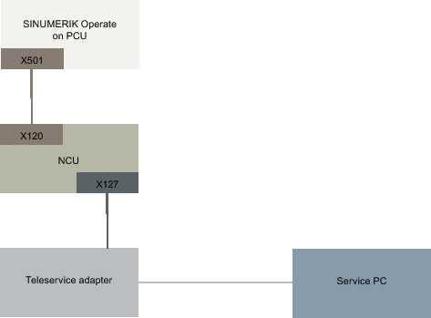
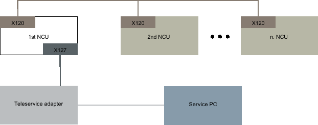
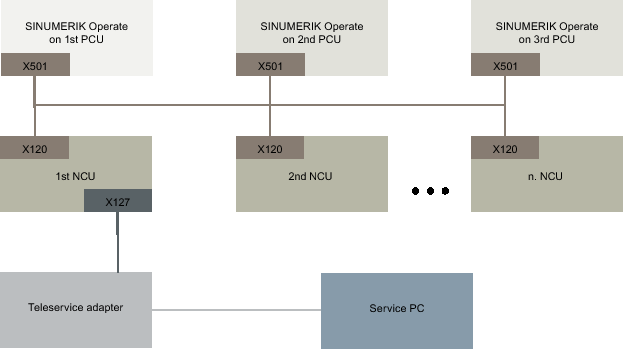

The following settings must be made for remote diagnostics via modem using a Teleservice adapter IE (TS Adapter) that is connected at X127.
IP address of the adapter: 192.168.215.30, subnet mask 255.255.255.224
IP address of the caller: 192.168.215.29
These two addresses are also stored as standard in the "tcu.ini" file. If other addresses are used, then appropriately change the entries "X127ModemIP" and "X127RemoteAccessIP" in the "tcu.ini" file.
Enable the ports for the services for S7 communication, http, HTTPS, SSH as well as VNC (port 5900) in the firewall.
Basic system with SINUMERIK Operate on NCU (and operating station with TCU)
With the previously mentioned settings and the default values, in this configuration, remote diagnostics via TS Adapter is possible without any additional changes having to be made.
Basic system with SINUMERIK Operate on PCU
With the previously mentioned settings and the default values, in this configuration, remote diagnostics via TS Adapter is possible without any additional changes having to be made. When operating a SINUMERIK Operate on a PCU, the SINUMERIK Operate in the NCU must be switched off.
System with several NCUs and a fixed modem
The "Access MyMachine /P2P" option only has to be set for the NCU to which the TS Adapter is connected at the X127 interface. Modem access can only be permitted by making the appropriate entries at the SINUMERIK Operate in this NCU and the "Request remote control" function executed. If modem access is permitted, then the service PC implicitly has access to all other NCUs and their operating software. On the other hand, the operating screens to control the remote access can be used and set at each station (SINUMERIK Operate in the NCU) individually for the station in conjunction with the relevant local PLC.
System with several NCUs, several PCUs and a fixed modem
The "Access MyMachine /P2P" option only has to be set for the NCU to which the TS Adapter is connected at the X127 interface. Modem access can only be permitted by making the appropriate entries at the SINUMERIK Operate on the PCU that is assigned to this NCU and the "Request remote control" function executed. If modem access is permitted, then the service PC implicitly has access via the plant or system network to all other NCUs and PCUs and their operating software. The operating screens to control the remote access can be individually used and set at each station (SINUMERIK Operate in the NCU) for the station in conjunction with the relevant local PLC.